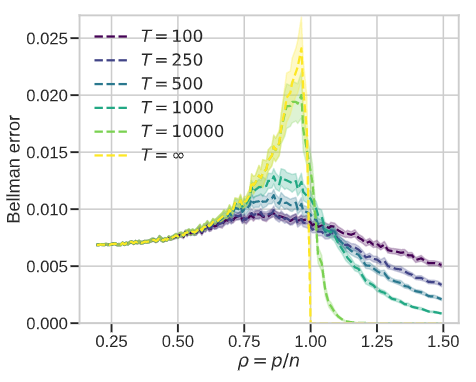
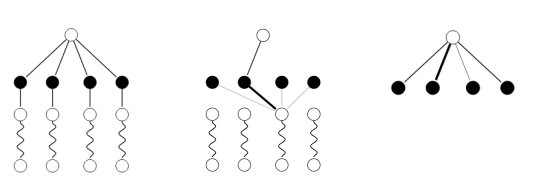
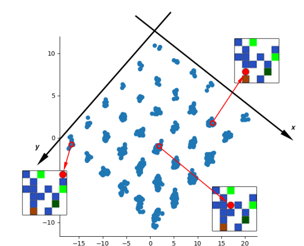
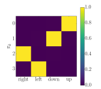
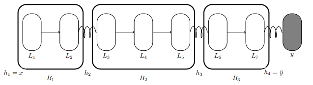
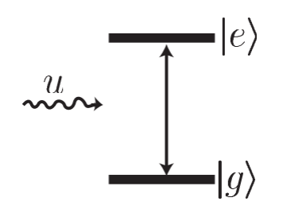

|
I recently graduated from my PhD at Mila, where I worked on Reinforcement Learning and Deep Learning. Warning this site is still under construction, my linked CV may be more up to date. |

|
|
I'm interested in reinforcement learning, deep learning and optimization. I have worked on unsupervised RL, planning, generalization in deep learning and optimization aspects of reinforcement learning. Representative papers are highlighted. Stars * indicate first authorship. |
|  |
Valentin Thomas* We study the role of overparameterization in Temporal Difference (TD) learning and how it affects optimization. For this, we analyze the spectrum of the Temporal Difference operator when using random features and with some assumptions of the Markov transition kernel. |

|
Jincheng Mei*, Wesley Chung, Valentin Thomas, Bo Dai, Csaba Szepesvari, Dale Schuurmans Using value function baselines in on-policy stochastic natural policy gradients help achieve convergence toward globally optimal policy by reducing update aggressiveness rather than variance. |

|
Alexandre Piché*, Valentin Thomas*, Joseph Marino, Rafael Pardinas, Gian Maria Marconi, Christopher Pal, Mohammad Emtiyaz Khan We analyze the implicit regularization performed by using Target Networks and show that, surprisingly, it can unstabilize TD. We propose a theoretically grounded alternative method, Functional Regularization, which alleviates these theoretical issues and performs well empirically. |

|
Valentin Thomas*, Wesley Chung*, Marlos C. Machado, Nicolas Le Roux blog post/ICML talk We show empirically and theoretically that despite common wisdom, baselines in policy gradient optimization have an effect beyond variance reduction and can impact convergence. |

|
Valentin Thomas*, Fabian Pedregosa, Bart van Merriënboer, Pierre-Antoine Mangazol, Yoshua Bengio, Nicolas Le Roux AISTATS talk We show how the interplay between the local curvature of the loss (the hessian) and the local gradient noise (the uncentered gradient covariance) can impact optimization and generalization in neural networks. |
|  |
Alexandre Piché, Valentin Thomas, Cyril Ibrahim, Yoshua Bengio, Julien Cornebise and Chris Pal Extension of our work "Probabilistic Planning with Sequential Monte Carlo methods" by treating the trajectory as a latent variable and using an EM algorithm. |

|
Valentin Thomas*, Alexandre Piché*, Cyril Ibrahim, Yoshua Bengio and Chris Pal Leveraging control as inference and Sequential Monte Carlo methods, we propose a probabilistic planning algorithm. |

|
Valentin Thomas*, Emmanuel Bengio*, William Fedus*, Jules Pondard, Philippe Beaudoin, Hugo Larochelle, Joelle Pineau, Doina Precup and Yoshua Bengio We draw a connection between mutual information and the intrinsic reward function (through the Donsker-Varadhan representation of the Kullback-Leibler divergence) used for learning jointly options/factors and latent representations in Independently Controllable Factors. |
|  |
Valentin Thomas*, Jules Pondard*, Emmanuel Bengio*, Marc Sarfati, Philippe Beaudoin, Marie-Jean Meurs, Joelle Pineau, Doina Precup, Yoshua Bengio This work is a finalized version of Independently Controllable Features where the policies and factors are now embedded in a contiuous space. We demonstrate how one can use the features learnt. |
|  |
Emmanuel Bengio*, Valentin Thomas, Joelle Pineau, Doina Precup, Yoshua Bengio We propose a way to learn jointly a set of discrete policies each affecting a component of the latent state representation for unsupervised reinforcement learning. We hypothesize that this process discovers controllable factors of variation in the world as well as how to control them. |
|  |
Valentin Thomas*, Akhilesh Gotmare*, Johanni Brea and Martin Jaggi We propose BlockProp which lets one train deep neural networks in model parallel fashion, where parts of the model may reside on different devices (GPUs). |
|  |
Valentin Thomas*, Pierre Rouchon Report for a research semester in 2014 (in french) This research project was about designing a feeback control loop using an electromagnetic field to preserve the entanglement of two qbits. This is necessary as because of quantum decoherence the entanglement tends to vanish which is a major issue in developping quantum computer hardware. We proposed a simple Lyapunov-based feedback control loop. |
Here you can find the internships I have done during my MSc at Mines Paris and at Ecole Normale Superiéure Paris-Saclay then during my PhD at University of Montreal.